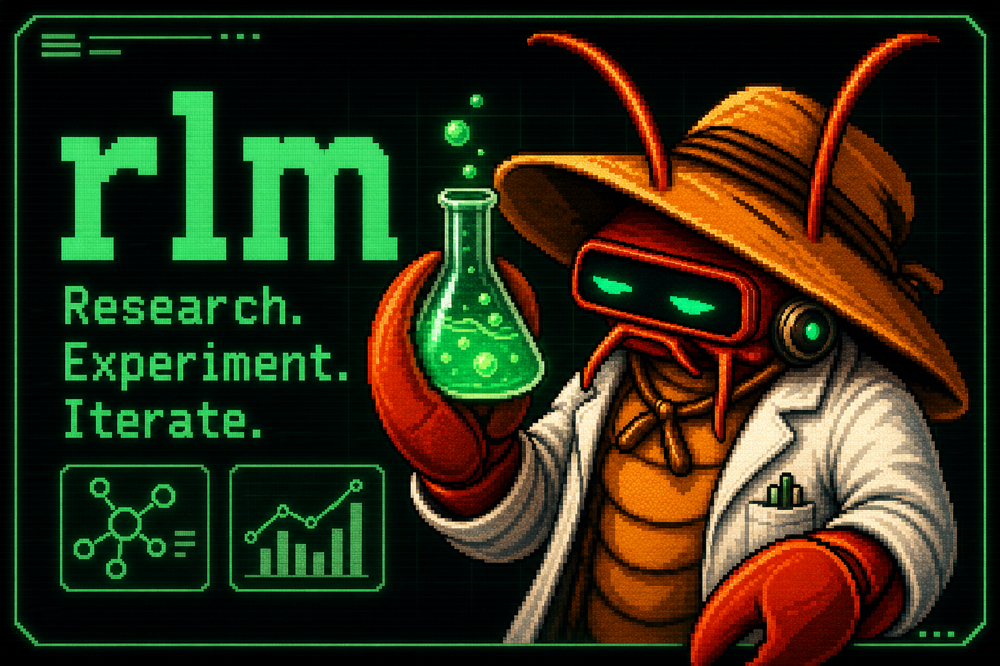

gjc rlm — research / REPL mode
A Jupyter-notebook-style research session over a persistent Python kernel. The toolset is hard-gated to python + read + web_search (asserted after registry assembly, so no edit/write can leak in). Every cell streams into .gjc/rlm/<session>/notebook.ipynb and a report.md is synthesized on exit.